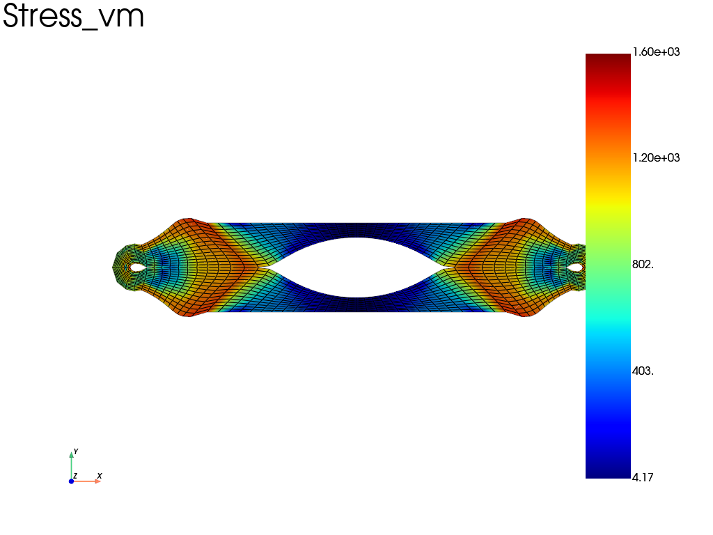

Note
Go to the end to download the full example code.
Self-contact — hole plate compression (2D, penalty method)
A plate with a large circular hole is compressed until self-contact
occurs on the hole’s inner surface. Uses the penalty self-contact
method (fd.constraint.SelfContact) with an elasto-plastic material.
Large strain (Updated Lagrangian with logarithmic corotational).
Note
Requires simcoon for the EPICP elasto-plastic material.

Iter 1 - Time: 0.01000 - dt 0.01000 - NR iter: 5 - Err: 0.00241
Iter 2 - Time: 0.02000 - dt 0.01000 - NR iter: 2 - Err: 0.00403
Iter 3 - Time: 0.03000 - dt 0.01000 - NR iter: 3 - Err: 0.00394
Iter 4 - Time: 0.04000 - dt 0.01000 - NR iter: 3 - Err: 0.00257
Iter 5 - Time: 0.05000 - dt 0.01000 - NR iter: 3 - Err: 0.00247
Iter 6 - Time: 0.06000 - dt 0.01000 - NR iter: 3 - Err: 0.00190
Iter 7 - Time: 0.07000 - dt 0.01000 - NR iter: 2 - Err: 0.00447
Iter 8 - Time: 0.08000 - dt 0.01000 - NR iter: 3 - Err: 0.00288
Iter 9 - Time: 0.09000 - dt 0.01000 - NR iter: 2 - Err: 0.00274
Iter 10 - Time: 0.10000 - dt 0.01000 - NR iter: 3 - Err: 0.00222
Iter 11 - Time: 0.11000 - dt 0.01000 - NR iter: 2 - Err: 0.00162
Iter 12 - Time: 0.12000 - dt 0.01000 - NR iter: 2 - Err: 0.00400
Iter 13 - Time: 0.13000 - dt 0.01000 - NR iter: 2 - Err: 0.00421
Iter 14 - Time: 0.14000 - dt 0.01000 - NR iter: 2 - Err: 0.00375
Iter 15 - Time: 0.15000 - dt 0.01000 - NR iter: 2 - Err: 0.00347
Iter 16 - Time: 0.16000 - dt 0.01000 - NR iter: 2 - Err: 0.00319
Iter 17 - Time: 0.17000 - dt 0.01000 - NR iter: 2 - Err: 0.00297
Iter 18 - Time: 0.18000 - dt 0.01000 - NR iter: 2 - Err: 0.00285
Iter 19 - Time: 0.19000 - dt 0.01000 - NR iter: 2 - Err: 0.00278
Iter 20 - Time: 0.20000 - dt 0.01000 - NR iter: 2 - Err: 0.00288
Iter 21 - Time: 0.21000 - dt 0.01000 - NR iter: 2 - Err: 0.00309
Iter 22 - Time: 0.22000 - dt 0.01000 - NR iter: 2 - Err: 0.00362
Iter 23 - Time: 0.23000 - dt 0.01000 - NR iter: 3 - Err: 0.00282
Iter 24 - Time: 0.24000 - dt 0.01000 - NR iter: 2 - Err: 0.00155
Iter 25 - Time: 0.25000 - dt 0.01000 - NR iter: 2 - Err: 0.00276
Iter 26 - Time: 0.26000 - dt 0.01000 - NR iter: 2 - Err: 0.00316
Iter 27 - Time: 0.27000 - dt 0.01000 - NR iter: 2 - Err: 0.00326
Iter 28 - Time: 0.28000 - dt 0.01000 - NR iter: 2 - Err: 0.00384
Iter 29 - Time: 0.29000 - dt 0.01000 - NR iter: 2 - Err: 0.00403
Iter 30 - Time: 0.30000 - dt 0.01000 - NR iter: 2 - Err: 0.00477
Iter 31 - Time: 0.31000 - dt 0.01000 - NR iter: 3 - Err: 0.00138
Iter 32 - Time: 0.32000 - dt 0.01000 - NR iter: 2 - Err: 0.00127
Iter 33 - Time: 0.33000 - dt 0.01000 - NR iter: 2 - Err: 0.00143
Iter 34 - Time: 0.34000 - dt 0.01000 - NR iter: 2 - Err: 0.00148
Iter 35 - Time: 0.35000 - dt 0.01000 - NR iter: 2 - Err: 0.00162
Iter 36 - Time: 0.36000 - dt 0.01000 - NR iter: 2 - Err: 0.00188
Iter 37 - Time: 0.37000 - dt 0.01000 - NR iter: 2 - Err: 0.00278
Iter 38 - Time: 0.38000 - dt 0.01000 - NR iter: 2 - Err: 0.00420
Iter 39 - Time: 0.39000 - dt 0.01000 - NR iter: 3 - Err: 0.00352
Iter 40 - Time: 0.40000 - dt 0.01000 - NR iter: 2 - Err: 0.00311
Iter 41 - Time: 0.41000 - dt 0.01000 - NR iter: 2 - Err: 0.00303
Iter 42 - Time: 0.42000 - dt 0.01000 - NR iter: 2 - Err: 0.00298
Iter 43 - Time: 0.43000 - dt 0.01000 - NR iter: 2 - Err: 0.00296
Iter 44 - Time: 0.44000 - dt 0.01000 - NR iter: 2 - Err: 0.00283
Iter 45 - Time: 0.45000 - dt 0.01000 - NR iter: 3 - Err: 0.00461
Iter 46 - Time: 0.46000 - dt 0.01000 - NR iter: 5 - Err: 0.00271
Convergence Failed - dt 0.01000 - NR iter: 3 - Err: 0.88362
Iter 47 - Time: 0.46250 - dt 0.00250 - NR iter: 5 - Err: 0.00309
Iter 48 - Time: 0.46563 - dt 0.00313 - NR iter: 2 - Err: 0.00338
Iter 49 - Time: 0.46953 - dt 0.00391 - NR iter: 2 - Err: 0.00234
Iter 50 - Time: 0.47441 - dt 0.00488 - NR iter: 2 - Err: 0.00165
Iter 51 - Time: 0.48000 - dt 0.00610 - NR iter: 2 - Err: 0.00201
Iter 52 - Time: 0.48610 - dt 0.00610 - NR iter: 2 - Err: 0.00265
Iter 53 - Time: 0.49373 - dt 0.00763 - NR iter: 2 - Err: 0.00281
Iter 54 - Time: 0.50000 - dt 0.00954 - NR iter: 2 - Err: 0.00240
Iter 55 - Time: 0.50954 - dt 0.00954 - NR iter: 5 - Err: 0.00288
Iter 56 - Time: 0.51954 - dt 0.01000 - NR iter: 3 - Err: 0.00382
Convergence Failed - dt 0.01000 - NR iter: 6 - Err: 0.30378
Iter 57 - Time: 0.52000 - dt 0.00250 - NR iter: 3 - Err: 0.00147
Iter 58 - Time: 0.52250 - dt 0.00250 - NR iter: 2 - Err: 0.00381
Iter 59 - Time: 0.52563 - dt 0.00313 - NR iter: 2 - Err: 0.00273
Iter 60 - Time: 0.52953 - dt 0.00391 - NR iter: 2 - Err: 0.00081
Iter 61 - Time: 0.53441 - dt 0.00488 - NR iter: 2 - Err: 0.00087
Iter 62 - Time: 0.54000 - dt 0.00610 - NR iter: 2 - Err: 0.00091
Iter 63 - Time: 0.54610 - dt 0.00610 - NR iter: 2 - Err: 0.00090
Iter 64 - Time: 0.55373 - dt 0.00763 - NR iter: 2 - Err: 0.00101
Iter 65 - Time: 0.56000 - dt 0.00954 - NR iter: 2 - Err: 0.00086
Convergence Failed - dt 0.00954 - NR iter: 6 - Err: 0.98334
Iter 66 - Time: 0.56238 - dt 0.00238 - NR iter: 3 - Err: 0.00400
Iter 67 - Time: 0.56536 - dt 0.00298 - NR iter: 4 - Err: 0.00123
Iter 68 - Time: 0.56909 - dt 0.00373 - NR iter: 2 - Err: 0.00458
Iter 69 - Time: 0.57375 - dt 0.00466 - NR iter: 2 - Err: 0.00215
Iter 70 - Time: 0.57957 - dt 0.00582 - NR iter: 2 - Err: 0.00204
Iter 71 - Time: 0.58000 - dt 0.00728 - NR iter: 2 - Err: 0.00212
Iter 72 - Time: 0.58728 - dt 0.00728 - NR iter: 2 - Err: 0.00326
Iter 73 - Time: 0.59637 - dt 0.00909 - NR iter: 2 - Err: 0.00070
Iter 74 - Time: 0.60000 - dt 0.01000 - NR iter: 2 - Err: 0.00065
Iter 75 - Time: 0.61000 - dt 0.01000 - NR iter: 2 - Err: 0.00088
Iter 76 - Time: 0.62000 - dt 0.01000 - NR iter: 2 - Err: 0.00094
Convergence Failed - dt 0.01000 - NR iter: 12 - Err: 0.88962
Iter 77 - Time: 0.62250 - dt 0.00250 - NR iter: 3 - Err: 0.00458
Convergence Failed - dt 0.00313 - NR iter: 15 - Err: 0.00781
Iter 78 - Time: 0.62328 - dt 0.00078 - NR iter: 3 - Err: 0.00088
Iter 79 - Time: 0.62426 - dt 0.00098 - NR iter: 2 - Err: 0.00031
Iter 80 - Time: 0.62548 - dt 0.00122 - NR iter: 2 - Err: 0.00152
Iter 81 - Time: 0.62700 - dt 0.00153 - NR iter: 2 - Err: 0.00057
Iter 82 - Time: 0.62891 - dt 0.00191 - NR iter: 2 - Err: 0.00057
Iter 83 - Time: 0.63130 - dt 0.00238 - NR iter: 2 - Err: 0.00078
Iter 84 - Time: 0.63428 - dt 0.00298 - NR iter: 2 - Err: 0.00102
Iter 85 - Time: 0.63800 - dt 0.00373 - NR iter: 2 - Err: 0.00109
Iter 86 - Time: 0.64000 - dt 0.00466 - NR iter: 2 - Err: 0.00072
Iter 87 - Time: 0.64466 - dt 0.00466 - NR iter: 2 - Err: 0.00084
Iter 88 - Time: 0.65048 - dt 0.00582 - NR iter: 2 - Err: 0.00095
Iter 89 - Time: 0.65775 - dt 0.00728 - NR iter: 2 - Err: 0.00098
Iter 90 - Time: 0.66000 - dt 0.00909 - NR iter: 2 - Err: 0.00076
Iter 91 - Time: 0.66909 - dt 0.00909 - NR iter: 2 - Err: 0.00081
Iter 92 - Time: 0.67909 - dt 0.01000 - NR iter: 2 - Err: 0.00089
Iter 93 - Time: 0.68000 - dt 0.01000 - NR iter: 2 - Err: 0.00077
Convergence Failed - dt 0.01000 - NR iter: 11 - Err: 0.77744
Iter 94 - Time: 0.68250 - dt 0.00250 - NR iter: 3 - Err: 0.00339
Iter 95 - Time: 0.68563 - dt 0.00313 - NR iter: 2 - Err: 0.00408
Iter 96 - Time: 0.68953 - dt 0.00391 - NR iter: 2 - Err: 0.00136
Iter 97 - Time: 0.69441 - dt 0.00488 - NR iter: 2 - Err: 0.00140
Iter 98 - Time: 0.70000 - dt 0.00610 - NR iter: 2 - Err: 0.00143
Iter 99 - Time: 0.70610 - dt 0.00610 - NR iter: 2 - Err: 0.00150
Iter 100 - Time: 0.71373 - dt 0.00763 - NR iter: 2 - Err: 0.00150
Iter 101 - Time: 0.72000 - dt 0.00954 - NR iter: 2 - Err: 0.00154
Iter 102 - Time: 0.72954 - dt 0.00954 - NR iter: 2 - Err: 0.00152
Iter 103 - Time: 0.73954 - dt 0.01000 - NR iter: 4 - Err: 0.00262
Iter 104 - Time: 0.74000 - dt 0.01000 - NR iter: 2 - Err: 0.00058
Iter 105 - Time: 0.75000 - dt 0.01000 - NR iter: 2 - Err: 0.00447
Iter 106 - Time: 0.76000 - dt 0.01000 - NR iter: 2 - Err: 0.00272
Iter 107 - Time: 0.77000 - dt 0.01000 - NR iter: 2 - Err: 0.00278
Iter 108 - Time: 0.78000 - dt 0.01000 - NR iter: 2 - Err: 0.00331
Iter 109 - Time: 0.79000 - dt 0.01000 - NR iter: 3 - Err: 0.00306
Iter 110 - Time: 0.80000 - dt 0.01000 - NR iter: 3 - Err: 0.00291
Iter 111 - Time: 0.81000 - dt 0.01000 - NR iter: 2 - Err: 0.00302
Iter 112 - Time: 0.82000 - dt 0.01000 - NR iter: 2 - Err: 0.00425
Iter 113 - Time: 0.83000 - dt 0.01000 - NR iter: 3 - Err: 0.00427
Iter 114 - Time: 0.84000 - dt 0.01000 - NR iter: 4 - Err: 0.00401
Iter 115 - Time: 0.85000 - dt 0.01000 - NR iter: 3 - Err: 0.00392
Iter 116 - Time: 0.86000 - dt 0.01000 - NR iter: 3 - Err: 0.00425
Iter 117 - Time: 0.87000 - dt 0.01000 - NR iter: 2 - Err: 0.00494
Iter 118 - Time: 0.88000 - dt 0.01000 - NR iter: 3 - Err: 0.00411
Iter 119 - Time: 0.89000 - dt 0.01000 - NR iter: 4 - Err: 0.00372
Iter 120 - Time: 0.90000 - dt 0.01000 - NR iter: 3 - Err: 0.00406
Iter 121 - Time: 0.91000 - dt 0.01000 - NR iter: 3 - Err: 0.00295
Convergence Failed - dt 0.01000 - NR iter: 15 - Err: 0.39254
Iter 122 - Time: 0.91250 - dt 0.00250 - NR iter: 4 - Err: 0.00322
Iter 123 - Time: 0.91563 - dt 0.00313 - NR iter: 5 - Err: 0.00431
Iter 124 - Time: 0.91953 - dt 0.00391 - NR iter: 2 - Err: 0.00399
Iter 125 - Time: 0.92000 - dt 0.00488 - NR iter: 2 - Err: 0.00215
Iter 126 - Time: 0.92488 - dt 0.00488 - NR iter: 2 - Err: 0.00321
Iter 127 - Time: 0.93099 - dt 0.00610 - NR iter: 2 - Err: 0.00500
Iter 128 - Time: 0.93862 - dt 0.00763 - NR iter: 3 - Err: 0.00376
Iter 129 - Time: 0.94000 - dt 0.00954 - NR iter: 2 - Err: 0.00189
Iter 130 - Time: 0.94954 - dt 0.00954 - NR iter: 2 - Err: 0.00289
Iter 131 - Time: 0.95954 - dt 0.01000 - NR iter: 3 - Err: 0.00361
Iter 132 - Time: 0.96000 - dt 0.01000 - NR iter: 2 - Err: 0.00196
Iter 133 - Time: 0.97000 - dt 0.01000 - NR iter: 2 - Err: 0.00263
Convergence Failed - dt 0.01000 - NR iter: 9 - Err: 0.05891
Iter 134 - Time: 0.97250 - dt 0.00250 - NR iter: 4 - Err: 0.00491
Iter 135 - Time: 0.97563 - dt 0.00313 - NR iter: 2 - Err: 0.00297
Iter 136 - Time: 0.97953 - dt 0.00391 - NR iter: 3 - Err: 0.00297
Iter 137 - Time: 0.98000 - dt 0.00488 - NR iter: 2 - Err: 0.00100
Iter 138 - Time: 0.98488 - dt 0.00488 - NR iter: 2 - Err: 0.00290
Iter 139 - Time: 0.99099 - dt 0.00610 - NR iter: 3 - Err: 0.00305
Iter 140 - Time: 0.99862 - dt 0.00763 - NR iter: 3 - Err: 0.00333
Iter 141 - Time: 1.00000 - dt 0.00954 - NR iter: 3 - Err: 0.00134
<pyvista.plotting.plotter.Plotter object at 0x7e0249d87c10>
import fedoo as fd
import numpy as np
import os
if "__file__" in globals():
os.chdir(os.path.dirname(os.path.abspath(__file__)))
fd.ModelingSpace("2D")
# --- Geometry ---
mesh = fd.mesh.hole_plate_mesh(nr=15, nt=15, length=100, height=100, radius=45)
surf = fd.mesh.extract_surface(mesh)
# --- Contact (penalty self-contact) ---
contact = fd.constraint.SelfContact(surf, "linear", search_algorithm="bucket")
contact.contact_search_once = True
contact.eps_n = 1e6
nodes_top = mesh.find_nodes("Y", mesh.bounding_box.ymax)
nodes_bottom = mesh.find_nodes("Y", mesh.bounding_box.ymin)
# --- Material: EPICP (E, nu, alpha, sigmaY, H, beta) ---
E, nu = 200e3, 0.3
props = np.array([E, nu, 1e-5, 300, 1000, 0.3])
material = fd.constitutivelaw.Simcoon("EPICP", props)
# --- Large strain ---
wf = fd.weakform.StressEquilibrium(material, nlgeom="UL")
solid_assembly = fd.Assembly.create(wf, mesh)
assembly = fd.Assembly.sum(solid_assembly, contact)
pb = fd.problem.NonLinear(assembly)
if not os.path.isdir("results"):
os.mkdir("results")
res = pb.add_output(
"results/self_contact_penalty", solid_assembly, ["Disp", "Stress", "Strain"]
)
pb.bc.add("Dirichlet", nodes_bottom, "Disp", 0)
pb.bc.add("Dirichlet", nodes_top, "Disp", [0, -70])
pb.set_nr_criterion("Displacement", tol=5e-3, max_subiter=15)
pb.nlsolve(
dt=0.01,
dt_max=0.01,
tmax=1,
update_dt=True,
print_info=1,
interval_output=0.02,
)
# --- Static plot ---
res.plot("Stress", "vm", "Node", show=False, scale=1)
# An mp4 animation can be written with
# res.write_movie("results/self_contact_penalty", "Stress", "vm", "Node", framerate=24)
Total running time of the script: (0 minutes 21.772 seconds)